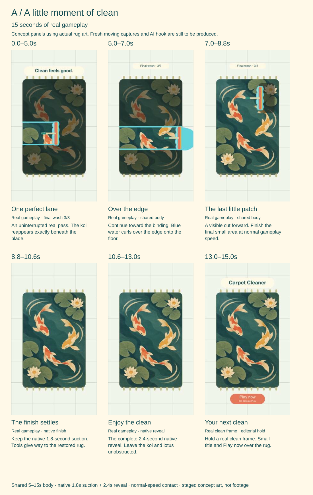
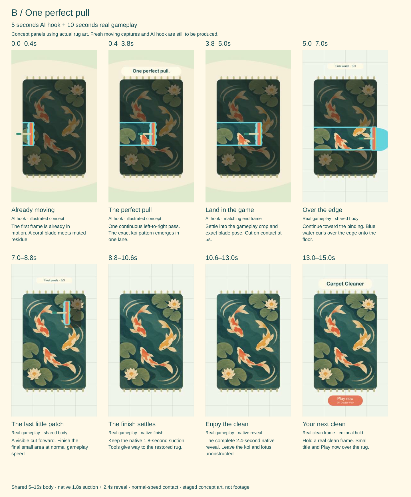

Clean feels good.
Two 15-second ads built around one quiet reward: a real squeegee pass revealing a beautiful koi-and-lotus rug.
Version A opens with five seconds of uninterrupted gameplay. Version B opens with five seconds of AI illustration, then joins the exact same ten seconds of gameplay and ending. The shared body lets us judge the opening without changing the payoff.
Let the clean edge do the work.
Begin in motion. Keep a coral squeegee, a visible ridge of blue runoff, and the mint-and-gold rug artwork in the same readable frame. Hold the pass long enough to follow the changing surface. The native suction and clean reveal are the reward; the title arrives after viewers have enjoyed it.
Use one wet job, already in its final hose → squeegee round 3/3. The game requires three rounds. A selected late-job excerpt is suitable for this ad, provided the edit retains honest phase continuity and does not present one wash as a complete new job.
What this pack represents. The boards are editable concept illustrations, supported by current staging stills. They are not frames from a newly recorded video or a generated AI clip. The September v3 capture predates the 5 October wet-gameplay revision, so a new complete take is required before editing these ads.
A beautiful lane, earned in the game.
The opening and first two seconds of the body are one continuous normal-speed pass. Choose a lane that restores recognizable koi and lotus detail, then carries water to the rug’s edge. At second seven, a clearly visible cut compresses the remaining work.

| Ad time | Picture & motion | Framing, copy & sound |
|---|---|---|
| 0.0–5.0 sFrames 0–149 | A1 · One uninterrupted late-job laneStart with the squeegee touching the surface and moving on frame one. At normal speed, reveal a crisp strip of koi and lotus within the final 3/3 round. A blue water ridge stays ahead of the blade; adjacent areas remain unfinished. | Fixed portrait framing, with the rug large and the moving boundary easy to see. Retain the native 3/3 HUD where legible. One small caption: “Clean feels good.” Hold briefly, then fade without obscuring the pass. Soft editorial wet swish, optional quiet music. |
| 5.0–7.0 sFrames 150–209 | A2 · Continue the same passNo cut at second five. The tool approaches the edge and sends the visible blue runoff out of the lane. Koi colors stay registered under the surface. | The frame at 5.0 seconds is the handoff target for version B. Maintain the same crop and motion. No caption. Let the wet swish soften as the ridge leaves the rug. |
| 7.0–8.8 sFrames 210–263 | A3 · Finish the last small patchVisible editorial cut to the same rug, same wet job and final round. A short real pass removes the remaining patch and triggers completion through the normal game threshold. | A slightly wider framing can signal the time cut. Keep the actual tool response, power and gates. No speed ramp, fabricated mask, skipped wash, or forced completion. |
| 8.8–10.6 sFrames 264–317 | A4 · Native suctionPlay the complete approximately 1.8-second suction phase. Preserve the game’s motion and surface behavior. | Hold the gameplay view. Added suction sound, if used, is editorial sound design and must remain soft. No added reward graphics or captions. |
| 10.6–13.0 sFrames 318–389 | A5 · Native clean revealPlay the full approximately 2.4-second reveal. The restored Stillwater Pond fills the frame with clear koi, lotus and lily-pad detail. | Use the fresh current-build reveal UI. Align the existing genuine completion cue once to its actual game event. Keep the artwork and native reveal unobstructed. |
| 13.0–15.0 sFrames 390–449 | A6 · A quiet clean-frame holdDeliberately hold a genuine fully clean frame from this take. Allow the image to remain still. | Small separated title and CTA: “Carpet Cleaner” / “Play now”. Optional secondary line: “On Google Play”, subject to checking the actual listing during production. Keep the rug as the hero; music gently resolves. |
Timing is the desired edit, not a reason to alter gameplay. If the fresh take cannot supply a seven-second continuous lane and a genuine 1.8-second final-patch excerpt at ordinary settings, choose another natural pass or revisit the shot lengths. Preserve the full 4.2-second native completion.
One perfect pull into the real game.
The illustrated opening borrows the game’s flat painted look and actual Stillwater Pond motif. The tool and water obey the same direction of movement as the capture: a vertically oriented coral blade moves horizontally from left to right. At second five, match the real source frame exactly enough that the cleaning action continues naturally.

| Ad time | Picture & motion | Framing, copy & sound |
|---|---|---|
| 0.0–0.4 sFrames 0–11 | B1 · Already movingThe vertical coral blade enters in contact with muted residue water. A first thin clean line immediately exposes color. Motion begins on the first frame. | Close, calm, game-inspired illustration. Show real koi/lotus shapes beneath the water. No blank introduction or logo. Optional small caption: “One perfect pull.” |
| 0.4–3.8 sFrames 12–113 | B2 · One beautiful continuous passThe same blade slides left to right in one unbroken movement. A modest water ridge gathers ahead; a crisp lane of Stillwater Pond appears behind. The whole rug remains partly unfinished. | Keep blade scale and speed believable against the recorded tool. Flat color, subtle painted texture and stable shapes. One soft continuous editorial swish; no loud impact, slime peel or magical transformation. |
| 3.8–5.0 sFrames 114–149 | B3 · Settle to the gameplay handoffEase the crop and camera into the exact rug scale, tool pose, water boundary and color of the extracted real frame at ad time 5.0 seconds. The blade keeps moving toward the edge. | Remove the optional caption before the join. End on the supplied gameplay target frame; no white flash or dissolve that conceals a mismatch. Bridge the swish into the shared body. |
| 5.0–7.0 sFrames 150–209 | B4 · Authentic edge runoffJoin the exact A2 source clip, at its identical in-point, crop and speed. The real squeegee continues toward the edge. | Native gameplay HUD. Identical picture and audio from 5.0 seconds onward, except a brief audio bridge needed at the seam. |
| 7.0–8.8 sFrames 210–263 | B5 · Authentic final patchUse the same visible cut and actual final-patch pass as A3. | Identical crop, timing, ordinary tool settings, and sound. |
| 8.8–10.6 sFrames 264–317 | B6 · Native suctionUse the full same 1.8-second suction segment as A4. | No additional caption or effect. Identical body audio. |
| 10.6–13.0 sFrames 318–389 | B7 · Native clean revealUse the same full 2.4-second reveal as A5. | Same current-build UI and genuine completion cue. Do not replace the real reveal with AI art. |
| 13.0–15.0 sFrames 390–449 | B8 · Identical clean-frame endingUse the same clean-frame hold and graphics as A6. | “Carpet Cleaner” / “Play now”, with the same approved availability line and destination. |
Generate around a locked real frame.
Capture and select A first. Extract the exact real frame at ad time 5.0 seconds as capture/handoff_05s.png. Use that frame as the final composition reference, plus the genuine rug texture and current wet staging stills. The current stills establish the design; only the newly extracted frame establishes the final match.
Primary prompt · “The clean lane”
Create a five-second vertical 9:16 animated illustration inspired by the supplied Carpet Cleaner gameplay references. Preserve the exact Stillwater Pond koi, lotus and lily-pad rug artwork from the supplied texture. Use the flat illustrated cream, mint, dark teal, coral and soft gold palette, with restrained painted texture and crisp silhouettes. A normal-sized coral squeegee has a vertically oriented blade and moves horizontally from left to right, touching the wet rug continuously. It starts moving on frame one. A modest blue residue-water ridge travels immediately ahead of the blade; the lane behind becomes visibly clear and reveals the existing printed motif. From 0.4 to 3.8 seconds, hold one smooth, unbroken satisfying pass. Leave the surrounding rug partially unclean. From 3.8 to 5.0 seconds, gently settle the camera and framing to the exact supplied final gameplay reference: same tool position and rotation, rug scale and edges, clean boundary, residue-water color, lighting and visible background. End on that composition while preserving the direction and pace of the real pass. Calm tactile movement; quiet, beautiful cleaning. Generate picture only, without lettering or logos.
Negative brief
No oversized supertool, rubbery blade, dust peeling into a ribbon, slime, foam explosion, swimming fish, rippling living pond, moving rug artwork, instant fully clean rug, new mechanics, extra tool, skipped round, invented HUD, text, logo, coin shower, character, camera shake, whip pan, fast zoom, flash transition or change of rug design. Keep the water ridge physically consistent with the selected real pass.
Two alternate five-second hooks
- Lotus edge. Begin tightly on a partly obscured lotus petal and the wet contact edge. One small clean lane restores the printed petal as the coral blade moves left to right. Open the crop gradually, then arrive at
capture/handoff_05s.pngduring 3.8–5.0 seconds. The flower remains printed artwork. - Quiet water line. Begin tightly on the modest blue ridge ahead of the same coral blade. The satisfaction comes from the ridge advancing evenly while the koi outline appears behind it. Start the widening move slightly earlier, then use the identical 3.8–5.0-second settle and final pose.
Each alternate changes only the first five seconds. Keep the same primary rug, tool, end frame, ten-second gameplay body, title, CTA and music. If a generated move cannot land on the real composition without visible warping, revise the hook framing rather than distorting the gameplay.
A little design, plenty of rug.
The game’s rug art is raster texture in a flat illustrated style. Keep that texture recognizable in gameplay and AI references. Surrounding captions, botanical accents, title and CTA should be genuine editable SVG vectors, built as separate components. A soft illustrated look does not make the original rug texture a vector asset.
Use dark teal text on cream, generous spacing and one gentle leaf or lotus accent outside the cleaning area. Preserve the rug’s full aspect ratio. A static crop is preferable during the best pass; avoid stacked tool windows, rapid montage, repeated zooms, sparkles over the surface, or captions describing every action.
Placement working area: on a 1080 × 1920 composition, start essential editorial text within approximately x=100–880 and y=230–1510. Place title and CTA in clear background beside or above the clean rug, never over its koi detail or native phase indicator. These margins are our initial design choice, not an official platform safe zone. Check the actual placement preview and current platform overlay before final delivery.
Audio: the inspected game material provides brush contact sounds and a genuine completion cue; it does not establish a bespoke wet-tool sound bed. Do not relabel brush noise as recorded squeegee or hose audio. Plan a subtle water swish and gentle suction as separately identified editorial foley. Use the existing quiet shop loop or cleared equivalent very softly, retain the genuine completion cue, and avoid doubling a cue already in the recorded track. No voice-over is needed.
Carry one continuous swish over B’s handoff. Let water soften at the edge, give the reveal a small musical breath, and resolve over the ending. Check the full mix on a phone at ordinary listening level, then watch both ads muted: the clean boundary, completion and CTA should still read.
The look comes from this build.
These current staging stills establish Stillwater Pond’s surface, color and runoff. They are reference images rather than final video source. The discovery reveal_after still has obsolete UI and should not define the new reveal shot.


Artwork sources: Stillwater Pond texture · Quiet Cove palette reference. Keep the primary comparison on Stillwater Pond; additional rug variations come after selecting the opening.


Record the complete job, then select the moment.
- Use the pinned toolchain. Open the project through
Open Game Editor.cmd; run command-line checks only throughtools/run_godot.ps1. Both must pass the shared strict check for Godot 4.7.2 stable Mono/.NET with its complete matching GodotSharp bundle. Do not use a PATH executable or another engine version. Keep the current GDScript implementation. - Isolate the filming save. Run gameplay validation with
-- --shop-test. Use a fresh capture session and isolated filming state, following the project’s existing save-isolation approach. Confirm the real player save is never opened or written. Record the progression and actual purchased tool levels used. - Capture a genuine Stillwater Pond wet job. Record all three hose → squeegee rounds at normal game speed and normal authored power. Keep ordinary wash gates and automatic completion intact. Use actual input; do not paint masks, seed removal, boost power, advance the simulation manually, or force a reveal. Prepared progression can select the job, but it cannot fabricate cleaning.
- Design the final-round gesture. During 3/3, choose a lateral left-to-right lane that crosses visible koi/lotus detail and carries a water ridge to the edge. Leave a genuine small remaining patch for the later short excerpt. The first seven ad seconds should come from one continuous real pass. Recapture if the blade, surface or lane is hard to read.
- Keep the full ending. Continue recording through normal completion, approximately 1.8 seconds of suction and 2.4 seconds of clean reveal. Keep extra clean frames for the deliberate two-second ending hold. Save both the native recording and the current HUD view.
- Log the selected frames. Record source in/out points, frame rate, crop, engine version, source build, tool power, final-round status and completion event. Extract opening, handoff, runoff, last-patch and clean-hold stills. Verify the normal-speed footage before asking the AI opening to match it.
- Build one shared ten-second body. Assemble A5–15 once, preserving the full native completion. Duplicate that exact body for B. Generate B’s opening only after the final handoff pose and crop are locked.
Planned wrapper invocation for a gameplay validation session, run from the repository root:
.\tools\run_godot.ps1 --path .\CarpetToy -- --shop-testThis is a plan, not a claim that validation or filming has run. A future capture driver must be checked against the current three-round implementation; the old September driver and footage are historical references. Android export, if later needed, uses Build APK.cmd and matching 4.7.2.stable.mono templates.
Separate sources, overlays and edit outputs.
Paths below are relative to this brief unless they begin with a repository location. “Planned” entries name the intended handoff files; they have not been produced by this document.
| Asset | File or location | Purpose & status |
|---|---|---|
| Gameplay board | Storyboard_A.svg | Six-panel editable concept for A.Storyboard deliverable · illustration, not video |
| Hybrid board | Storyboard_B.svg | Eight-panel editable concept for B.Storyboard deliverable · illustration, not AI clip |
| Real rug artwork | CarpetToy/assets/carpet/patterns/stillwater_pond.png | Actual koi/lotus raster texture for AI reference and fidelity checks.Existing source |
| Palette reference | CarpetToy/assets/carpet/patterns/quiet_cove.png | Supporting cream/mint/teal illustrated color language.Existing source |
| Current wet staging | art/renders/wet_freshness_stillwater_pond_wash_3_first_pass.png…_wash_3_runoff.png…_clean.png | Surface, runoff and clean-art references. These do not supply the final motion or reveal UI.Existing staging references |
| Complete new take | capture/stillwater_wet_full_take.mkv | Normal-speed complete three-round wet job, with all completion phases and audio.Planned · preserve native capture format if different |
| Capture log | capture/source_manifest.jsoncapture/shot_inpoints.csv | Build, version, save isolation, real tool settings, source frames, crops and completion evidence.Planned |
| Gameplay stills | capture/opening_00s.pngcapture/handoff_05s.pngcapture/runoff_07s.pngcapture/final_patch.pngcapture/clean_hold.png | Exact new source frames for opening, AI join, edge payoff, final patch and CTA background.Planned · extract after source selection |
| AI reference frames | ai/hook_start.pngai/hook_end_target.pngai/reference_sheet.png | Opening composition, exact copied real handoff target, texture and wet-state references.Planned |
| AI opening variants | ai/clean_lane_05s.mp4ai/lotus_edge_05s.mp4ai/water_line_05s.mp4 | Five-second picture-only clips sharing the identical end pose and body.Planned · generated illustration |
| Botanical SVG | vectors/botanical_accent.svg | Small mint leaf/lotus decoration, editable and separate from gameplay.Planned · true vector |
| Opening captions | vectors/caption_clean_feels_good.svgvectors/caption_one_perfect_pull.svg | Separate sparse text overlays; retain editable text masters and portable outlined versions.Planned · true vector |
| Title & CTA | vectors/title_carpet_cleaner.svgvectors/cta_play_now.svgvectors/availability_google_play.svg | Independent ending components. Verify the actual public listing before using its destination and availability line.Planned · true vector |
| Real completion cue | CarpetToy/assets/audio/restoration_complete.wav | Genuine runtime cue; align once to actual completion and avoid doubling recorded sound.Existing game source |
| Quiet music | CarpetToy/assets/audio/quiet_shop_music_loop.wav | Existing quiet loop, subject to final creative mix and phone listening.Existing game source |
| Editorial wet foley | audio/editorial_water_swish.wavaudio/editorial_suction.wav | New soft sound design; document its source and distinguish it from recorded gameplay audio.Planned |
| Shared edit body | edit/shared_body_05_15.movedit/timeline.json | One locked ten-second body with source provenance, normal speed, full suction/reveal and ending.Planned |
| Review exports | exports/Carpet_Cleaner_Clean_15s_A.mp4exports/Carpet_Cleaner_Clean_15s_B.mp4 | 1080 × 1920, 30 fps, exactly 450 frames, with matching body and ending.Planned · local review before campaign use |


Keep the question small and useful.
Compare A’s genuine pass with B’s illustrated pass using the same audience, destination, ten-second body, CTA and delivery settings. Then compare the two alternate AI openings to the primary B hook. Change one opening at a time; the test is not a forecast of which version will win.
Review early retention, retention at the five-second join, completed views, store visits and installs. When enough data is available, judge the quality of the resulting players: completion of the first meaningful cleaning job and return play, using the game’s actual available analytics. A hook that gets more views but loses interested players at the gameplay join needs revision.
- Watch at phone size and muted. The tool, water ridge, restored lane and CTA should be understandable without sound.
- Check the AI-to-game join frame by frame for tool rotation, motion direction, scale, water color, surface geometry and rug-pattern registration.
- Verify source speed, all three-round capture evidence, the normal completion trigger, and the full 1.8-second suction plus 2.4-second reveal.
- Check that the final-frame hold is deliberate and that title/CTA remain legible under the actual placement UI.
- Verify the Google Play listing, the public build’s shown features, and the actual destination before campaign production is finalized. Prior availability confirmation does not supply the link.
Platform basis: TikTok’s creative best practices for performance ads supports vertical 9:16, early hooks and a clear call to action. The calm pace, restrained captions, muted readability checks, illustration style and provisional text margins in this brief are our creative decisions. Placement-specific requirements still need checking in the final ad preview.
A calm pass. A beautiful reveal. One more rug.
Planning handoff · no new gameplay footage, AI motion clip or campaign is produced by this brief.